Không cần biết lập trình. Làm theo từng bước, nhìn ảnh giao diện và kiểm tra kết quả sau mỗi thao tác.
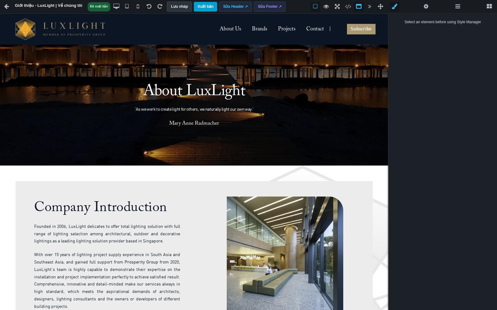
Giao diện Builder của dự án Revolux Asia / LuxLight.
Từ sửa một dòng chữ đến tự dựng một trang hoàn chỉnh Phiên bản 09.09.2026 · Tiếng Việt
UI/UX BUILDER · HƯỚNG DẪN THỰC HÀNH
Cách dùng cuốn sổ tay này
Nếu đây là lần đầu sử dụng, đọc phần bắt đầu nhanh rồi làm bài thực hành cuối tài liệu. Khi cần sửa một việc cụ thể, bấm tên mục trong mục lục để đến đúng trang.
Bạn muốn…
Đọc mục…
Sửa chữ, ảnh hoặc nút đang có
Sửa chữ · Thay ảnh · Nút và liên kết
Tự tạo trang mới
Tạo trang · Bố cục · Bài thực hành
Đưa nội dung lên website
Lưu nháp và xuất bản
Sửa logo, menu, chân trang
Header/Footer và khối dùng chung
Tìm công dụng từng khối
Tra cứu 38 khối
Cách đọc các bước: “Bấm” là nhấn chuột một lần; “nhấp đúp” là hai lần liên tiếp; “kéo thả” là giữ chuột trái, đưa đến vị trí mới rồi thả. Tên nút in đậm là nhãn bạn tìm trên màn hình.
Tài liệu hướng dẫn thao tác; không phải xác nhận mọi tích hợp đã hoạt động. Upload dịch vụ ảnh, gửi mail và tương tác của theme cần được kiểm tra thực tế theo hướng dẫn ở cuối tài liệu.
Đăng nhập admin bằng tài khoản được cấp. Mở Quản lý trang.
Tìm trang cần sửa. Bấm Thiết kế (Builder) của đúng dòng.
Đọc tên trang ở góc trên trái. Kiểm tra ngôn ngữ nội dung nếu có nút chọn ngôn ngữ.
Bấm vào tiêu đề trong trang. Nhấp đúp để đặt con trỏ vào chữ, bôi đen phần cần thay rồi gõ nội dung mới.
Bấm ra ngoài chữ để kết thúc. Bấm Lưu nháp; chờ thông báo Đã lưu bản nháp!.
Tải lại Builder sau khi lưu thành công. Kiểm tra tiêu đề vẫn đúng.
Bấm biểu tượng điện thoại rồi máy tính bảng; nhìn chữ có bị tràn hoặc che ảnh không.
Khi nội dung đã được duyệt, bấm Xuất bản → Xuất bản ngay. Chờ thông báo thành công.
Mở địa chỉ trang ngoài website trong tab riêng, tải lại và đối chiếu tiêu đề.
UI/UX BUILDER · HƯỚNG DẪN THỰC HÀNH
Vào đúng trang trong admin
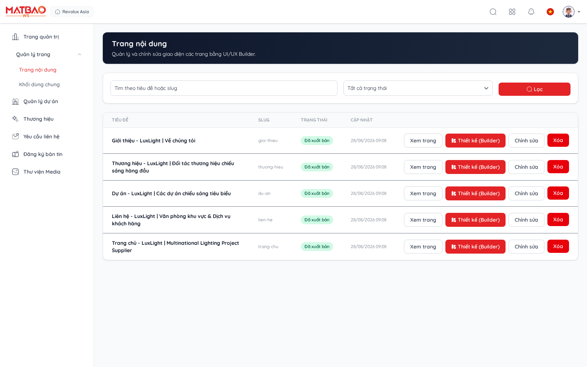
Danh sách trang: chọn đúng dòng trước khi mở thiết kế.
Vào Quản lý trang từ menu bên trái. Quan sát tên trang, đường dẫn và trạng thái.
Dùng ô tìm kiếm/bộ lọc đang có để thu hẹp danh sách; nếu không thấy trang, kiểm tra trang tiếp theo và bộ lọc.
Bấm Thiết kế (Builder) để sửa bố cục. Màn hình Thông tin trang dùng để sửa tên, đường dẫn và SEO.
Trước khi chuyển sang trang khác, lưu nháp và chờ thông báo thành công.
UI/UX BUILDER · HƯỚNG DẪN THỰC HÀNH
Tạo trang mới: điền thông tin
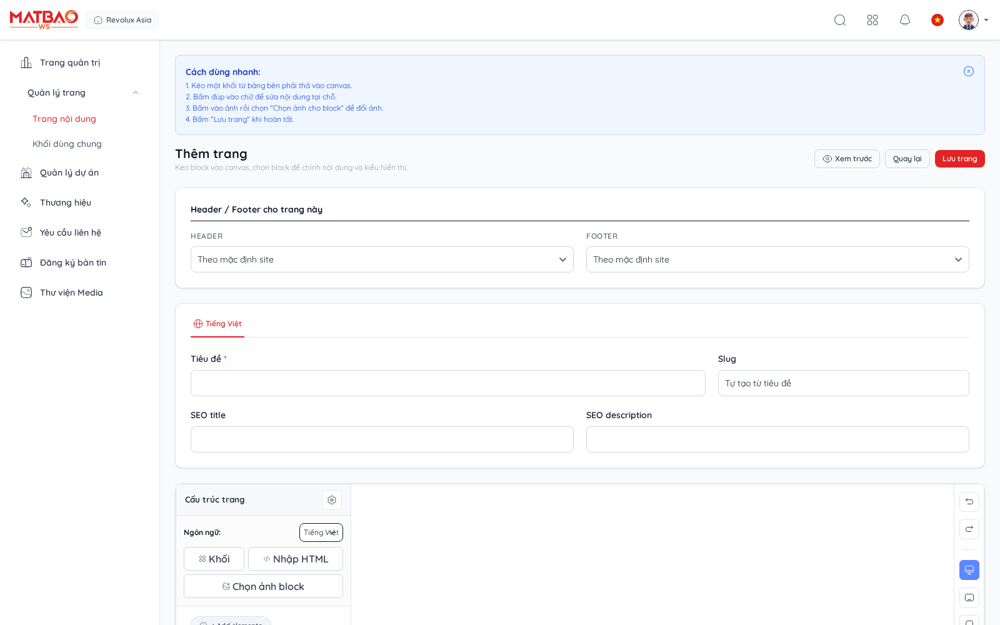
Màn hình tạo trang có phần thông tin và vùng thiết kế ban đầu.
Trong danh sách trang, chọn nút thêm trang. Nếu hộp Chọn một mẫu tạo xuất hiện, chọn Bắt đầu từ trang trắng để làm theo hướng dẫn; các mẫu có sẵn là lựa chọn khởi đầu khác, cần sửa và kiểm tra lại nội dung.
Nhập Tiêu đề ở ngôn ngữ mặc định, ví dụ “Giới thiệu showroom”.
Nhập Slug, ví dụ “gioi-thieu-showroom”; đây là phần tên trong địa chỉ trang. Không nhập cả tên miền. Nếu để trống, hệ thống có thể tạo từ tiêu đề.
Nhập SEO title là tên ngắn gọn cho kết quả tìm kiếm; SEO description là mô tả đúng nội dung trang.
Giữ Header/Footer theo mặc định nếu chưa có yêu cầu riêng. Chọn trạng thái Bản nháp khi còn soạn.
Bấm Lưu trang. Nếu báo thiếu trường hoặc trùng slug, sửa trường được báo rồi lưu lại. Sau khi trang đã có trong danh sách, mở Thiết kế (Builder).
UI/UX BUILDER · HƯỚNG DẪN THỰC HÀNH
Sửa tên, đường dẫn, SEO và ngôn ngữ
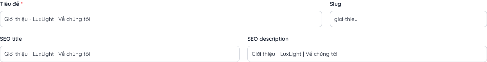
Các trường thông tin: Tiêu đề, Slug, SEO title và SEO description.
Trường
Cách điền và kiểm tra
Tiêu đề
Tên giúp nhận biết trang. Tiêu đề này và dòng H1 trong thiết kế có thể là hai nội dung riêng.
Slug
Tên đường dẫn dễ đọc, không dấu, nối bằng dấu gạch ngang. Đổi slug xong phải kiểm tra các menu/nút cũ.
SEO title / description
Viết đúng chủ đề, tránh nhồi từ khóa. Không có nghĩa công cụ tìm kiếm sẽ cập nhật ngay.
Ngôn ngữ
Chọn tab/ngôn ngữ cần nhập. Không có dịch tự động chỉ vì đã tạo nội dung tiếng Việt.
Trạng thái trang
Bản nháp/ Xuất bản ảnh hưởng việc trang được phục vụ công khai; đây không phải nút lưu thiết kế.
UI/UX BUILDER · HƯỚNG DẪN THỰC HÀNH
Nhìn tổng thể màn hình Builder
Thanh công cụ ở trên · Trang ở giữa · Bảng chỉnh ở bên phải.
Vùng
Bạn làm gì ở đây?
Thanh trên trái
Quay lại danh sách; đọc tên và trạng thái trang; chọn thiết bị; hoàn tác; lưu và xuất bản.
Thanh trên phải
Bật viền, xem trước, toàn màn hình, mã nguồn, ngữ cảnh Header/Footer, thu gọn bảng, kéo tự do.
Giữa màn hình
Chọn phần tử, nhập chữ, đặt khối vào vị trí muốn hiển thị.
Bảng bên phải
Bốn tab: Kiểu dáng, Thuộc tính, Lớp và Khối.
Khi chưa chọn phần tử, bảng có thể hiện “Select an element before using Style Manager”. Nghĩa là hãy bấm chọn một thành phần trong trang trước.
UI/UX BUILDER · HƯỚNG DẪN THỰC HÀNH
Tra cứu nút trên thanh công cụ
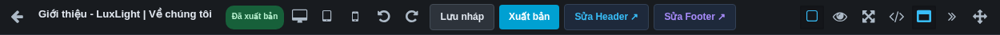
Đọc chú thích bằng cách đưa chuột lên biểu tượng.
Nút / biểu tượng
Cách sử dụng
Mũi tên trái
Trở lại danh sách. Lưu nháp trước khi rời trang.
Máy tính / tablet / điện thoại
Đổi kích thước khung thiết kế. Tablet 768px; điện thoại 375px.
Mũi tên cong trái / phải
Hoàn tác / làm lại thao tác trong phiên. Có thể dùng Ctrl+Z / Ctrl+Shift+Z.
Lưu nháp
Lưu thiết kế đang sửa. Có phím Ctrl+S; chờ thông báo thành công.
Xuất bản
Mở xác nhận, đưa phiên bản nội dung ra website khi xác nhận thành công.
Sửa Header / Sửa Footer
Mở phần dùng chung đang áp dụng cho trang.
Ô vuông nét viền
Hiện/ẩn viền để nhận ra ranh giới các khối.
Con mắt
Xem trước, ẩn công cụ. Bấm lại nút xem trước để quay về chỉnh sửa.
Bốn mũi tên mở rộng
Toàn màn hình; bấm lại để thoát.
Ký hiệu
Mở HTML/CSS; phần nâng cao, không cần dùng cho sửa nội dung thường ngày.
Khung cửa sổ
Hiện/ẩn Header/Footer thật làm ngữ cảnh, chỉ xem tại trang này.
Dấu »
Thu gọn/mở lại bảng bên phải.
Mũi tên bốn hướng
Bật/tắt kéo thả tự do. Xem mục nâng cao trước khi bật.
UI/UX BUILDER · HƯỚNG DẪN THỰC HÀNH
Chọn đúng phần cần sửa
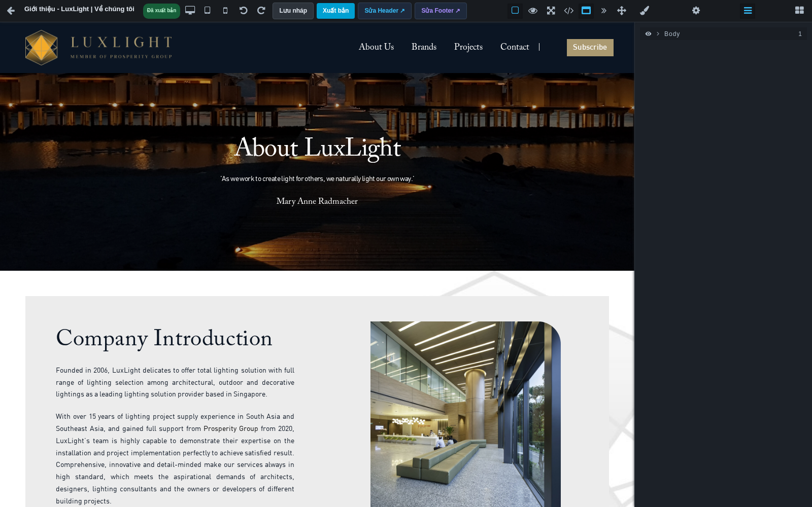
Tab Lớp giúp chọn đúng phần chữ nằm trong nhiều khung.
Bấm một lần vào vùng muốn sửa. Quan sát đường viền và tên phần tử được chọn.
Nếu đang chọn cả vùng lớn, mở Lớp bằng biểu tượng ba dòng bên phải.
Mở các nhánh bằng dấu mũi tên; chọn nhánh con cho đến khi đúng chữ, ảnh hoặc nút được tô sáng.
Bấm Thuộc tính để đổi nội dung đặc biệt, hoặc Kiểu dáng để đổi màu/khoảng cách.
Muốn sửa cả vùng: chọn khung cha. Muốn sửa riêng một ảnh: chọn ảnh con.
UI/UX BUILDER · HƯỚNG DẪN THỰC HÀNH
Sửa chữ và cấp tiêu đề
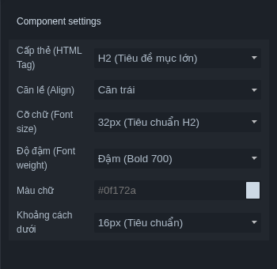
Thuộc tính của khối Tiêu Đề.
Chọn chữ trong canvas. Nhấp đúp vào chữ để nhập.
Bôi đen đoạn cần thay, nhập nội dung đã chuẩn bị. Với văn bản dán từ Word, ưu tiên dán văn bản thuần để tránh mang định dạng lạ.
Dùng thanh định dạng xuất hiện khi sửa chữ để làm đậm/nghiêng hoặc định dạng phần đang bôi đen nếu nút đó có sẵn.
Bấm ra ngoài. Với khối Tiêu Đề, vào Thuộc tính chọn thẻ H1/H2/H3 theo vai trò.
Đổi cỡ chữ ở Kiểu dáng → Kiểu chữ, rồi lưu nháp.
H1: chủ đề chính của trang. H2: tiêu đề các mục. H3: mục nhỏ trong H2. Thường dùng một H1 rõ ràng; không chọn H1 chỉ để chữ to hơn.
UI/UX BUILDER · HƯỚNG DẪN THỰC HÀNH
Nút bấm và đường liên kết
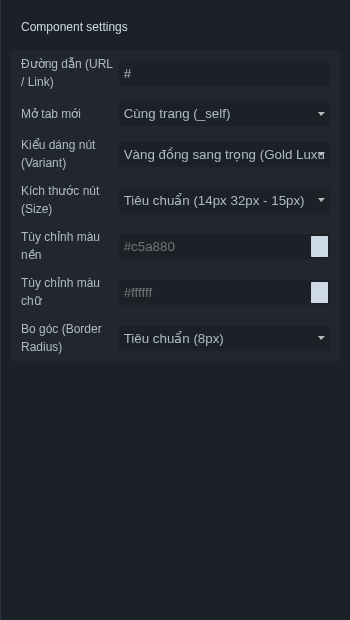
Thuộc tính của Nút Bấm.
Chọn nút trong canvas. Nhấp đúp vào nhãn để đổi thành câu ngắn, ví dụ “Liên hệ tư vấn”.
Mở Thuộc tính. Điền đường dẫn vào trường liên kết/URL hiển thị.
Chọn đích mở nếu có: cùng tab cho điều hướng thông thường, tab mới khi cần giữ trang hiện tại.
Trong Thuộc tính, chọn Kiểu dáng nút (Variant) và Kích thước nút (Size); có thể chỉnh màu nền, màu chữ và bo góc ngay bên dưới. Dùng Kiểu dáng để chỉnh thêm khoảng đệm.
Lưu nháp; sau xuất bản bấm thử nút trên trang công khai.
Đích đến
Ví dụ
Trang trong website
/lien-he
Website khác
https://example.com
Gọi điện
tel:+842812345678
Email
mailto:info@example.com
UI/UX BUILDER · HƯỚNG DẪN THỰC HÀNH
Thay ảnh đang có
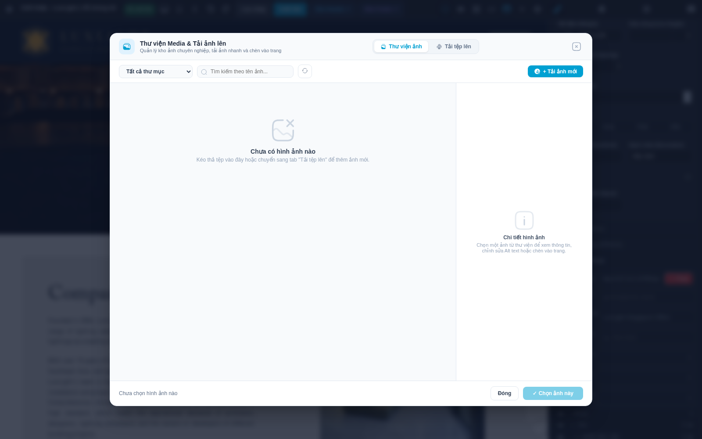
Thư viện Media: tìm ảnh, chọn ảnh rồi xác nhận. Bản kiểm thử không có tài nguyên Media thật.
Chọn ảnh trong trang. Nhấp đúp hoặc vào Thuộc tính bấm Chọn ở trường ảnh.
Trong thư viện, tìm theo tên hoặc chọn thư mục nếu có. Bấm Tải thêm ảnh để xem phần tiếp theo khi nút xuất hiện.
Bấm vào ảnh muốn dùng. Đọc thông tin và xem ảnh được chọn ở vùng chi tiết.
Bấm Chọn ảnh này. Nếu nút chưa dùng được, chọn một ảnh trong kết quả hiện tại.
Kiểm tra ảnh trong trang đã đổi; bổ sung Alt, kiểm tra cách cắt ảnh; lưu nháp.
UI/UX BUILDER · HƯỚNG DẪN THỰC HÀNH
Tải ảnh mới lên thư viện
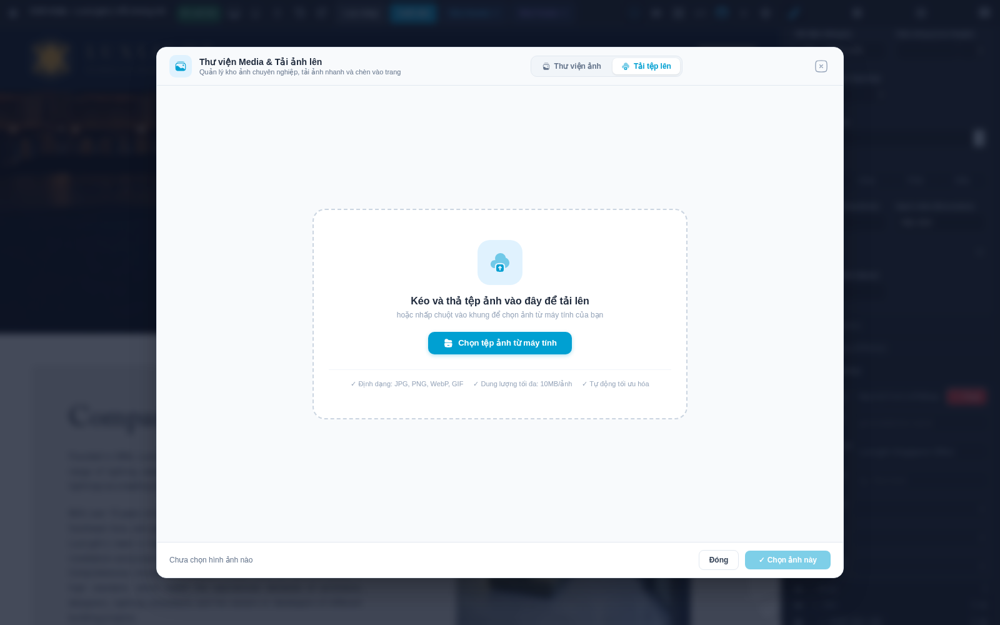
Tab Tải tệp lên trong hộp chọn ảnh.
Chuẩn bị ảnh đúng nội dung và đặt tên dễ tìm, ví dụ “showroom-mat-tien.jpg”.
Mở hộp chọn ảnh → tab Tải tệp lên.
Bấm vùng chọn tệp hoặc kéo tệp từ máy tính vào vùng tải. Dùng JPG/JPEG/PNG/WebP/GIF.
Đợi kết quả từng ảnh. Nếu lỗi, đọc thông báo định dạng, dung lượng hoặc quyền; sửa rồi thử lại.
Quay về danh sách ảnh nếu cần, chọn ảnh vừa tải và bấm Chọn ảnh này.
Kiểm tra trên trang, lưu nháp và mở lại.
Chọn ảnh ngang cho banner ngang, ảnh vuông cho thẻ vuông. Ảnh gốc quá nhỏ sẽ mờ khi phóng lớn. Nén ảnh trước khi tải nếu ảnh quá nặng; giới hạn tải cụ thể lấy theo thông báo hệ thống.
UI/UX BUILDER · HƯỚNG DẪN THỰC HÀNH
Ảnh nền và cách cắt ảnh
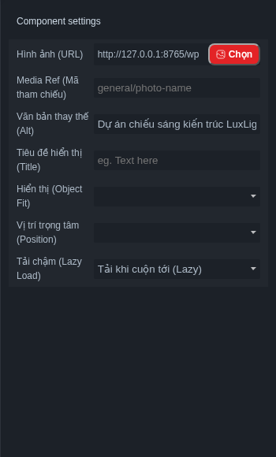
Thuộc tính ảnh: nguồn ảnh và mô tả.
Chọn ảnh con để đổi ảnh thường; chọn cả vùng để đổi ảnh nền.
Với ảnh thường, nhập Alt: mô tả ngắn, ví dụ “Không gian showroom”. Title là tiêu đề ảnh; giữ Media Ref theo ảnh đã chọn.
Ở Kiểu dáng, chỉnh chiều rộng/chiều cao phù hợp. Tránh kéo méo ảnh.
Ở Hiệu ứng, chọn Object Fit nếu cần: cover phủ kín nhưng có cắt; contain hiện đủ ảnh nhưng có khoảng trống.
Dùng Vị trí trọng tâm để giữ chủ thể ở giữa/phía trên. Tải chậm: Lazy tải khi cuộn tới, Eager tải ngay; giữ mặc định nếu chưa có yêu cầu.
Với nền, mở nhóm trang trí/nền, chọn nguồn ảnh và cách phủ nền. Kiểm tra cả desktop và mobile.
UI/UX BUILDER · HƯỚNG DẪN THỰC HÀNH
Màu sắc, kiểu chữ và khoảng cách
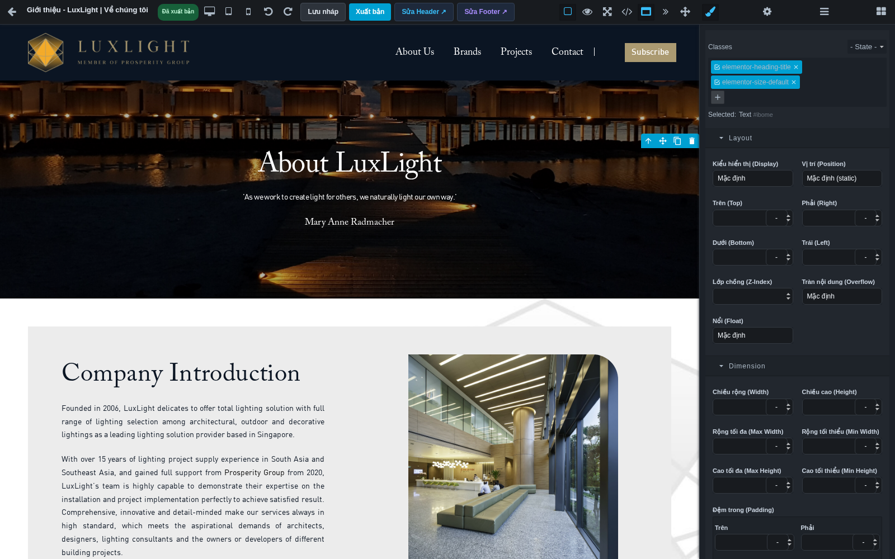
Chọn phần tử rồi mở Kiểu dáng. Nhấn tiêu đề nhóm để mở các trường.
Nhóm cần chỉnh
Cách dùng dễ nhớ
Kiểu chữ
Phông: giữ phông thiết kế đang dùng. Cỡ chữ: tăng/giảm vừa đủ. Độ đậm: 400 thường, 700 đậm. Căn chữ: trái/giữa/phải.
Màu chữ và nền
Chọn màu dễ đọc, đủ khác nhau giữa chữ và nền. Dùng màu thương hiệu đã được duyệt.
Padding / Đệm trong
Khoảng trống bên trong khối: tăng để chữ không sát mép.
Margin / Lề ngoài
Khoảng cách từ khối này đến khối bên cạnh.
Width / Max-width
Chiều rộng / giới hạn rộng tối đa. 100% nghĩa là bằng chiều rộng khung chứa.
Border / Radius
Đường viền / bo góc; thay đổi nhỏ rồi quan sát.
Ví dụ luyện tập: chọn đoạn văn → cỡ 16px → căn trái → chọn khung chứa → đệm trong 24px. Đây là giá trị tập thử, không phải tiêu chuẩn bắt buộc cho mọi trang.
UI/UX BUILDER · HƯỚNG DẪN THỰC HÀNH
Các nhóm kiểu dáng nâng cao
Nhóm
Ý nghĩa và cách dùng
Bố cục (Layout)
Display quyết định cách xếp/ẩn phần tử. “Ẩn (none)” làm phần tử biến mất ở quy tắc đang chỉnh. Position quyết định cách bám vị trí. Người mới ưu tiên bố cục có sẵn.
Kích thước & Khoảng cách
Chiều rộng/cao, min/max, padding, margin. Tránh chiều cao cố định cho đoạn văn dài vì có thể cắt nội dung.
Flex & Lưới
Hướng xếp, xuống dòng, căn ngang/dọc, khoảng cách giữa các phần tử. Chọn khung cha của các cột trước khi chỉnh.
Kiểu chữ
Phông, cỡ, đậm, dòng, khoảng cách chữ, căn lề, gạch chân. Đổi một nhóm nhỏ rồi xem kết quả.
Trang trí
Nền, ảnh nền, cách phủ và vị trí nền, bo góc, viền, bóng khối. Nền cố định cần kiểm tra trên điện thoại.
Hiệu ứng
Độ mờ, chuyển động, biến hình, bộ lọc, con trỏ, cách vừa ảnh. Trường yêu cầu biểu thức chữ nên nhờ người phụ trách kỹ thuật.
Đơn vị: px là kích thước cố định; % tính theo khung chứa; em/rem liên quan cỡ chữ; vw/vh liên quan màn hình. Có thể nhập số rồi chọn đơn vị. Để bắt đầu, dùng px cho cỡ chữ/khoảng đệm và % cho chiều rộng co giãn.
UI/UX BUILDER · HƯỚNG DẪN THỰC HÀNH
Thêm khối và dựng bố cục
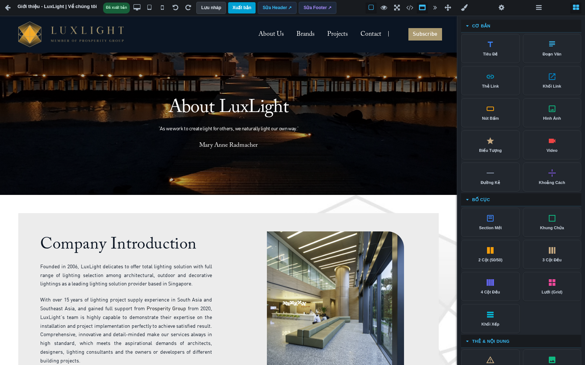
Mở tab Khối bằng biểu tượng bốn ô ở bên phải.
Mở Khối, bấm tên nhóm để xem các khối.
Kéo Section Mới vào nơi muốn tạo một vùng nội dung. Quan sát vạch/vùng chèn trước khi thả.
Trong vùng đó, thêm Khung Chứa nếu cần giới hạn bề ngang.
Kéo 2 Cột (50/50), 3 Cột Đều hoặc 4 Cột Đều khi cần bố cục nhiều cột.
Đặt chữ, ảnh hoặc nút vào từng cột. Dùng Lớp để xác nhận khối nằm trong đúng cột.
Chọn khung cha để chỉnh khoảng cách giữa cột; chọn khối con để chỉnh riêng nội dung.
Kiểm tra điện thoại, lưu nháp và mở lại.
UI/UX BUILDER · HƯỚNG DẪN THỰC HÀNH
Di chuyển, nhân bản, xóa, hoàn tác
Bấm chọn phần tử cần thao tác; nhìn viền xanh để biết phạm vi.
Dùng biểu tượng di chuyển trên thanh của phần tử hoặc kéo trong cây Lớp đến vị trí mới. Đợi vạch chỉ vị trí rồi thả.
Muốn tạo khối tương tự, dùng biểu tượng nhân bản (hai hình chồng nhau) nếu phần tử có hỗ trợ.
Sửa nội dung bản sao ngay để tránh hai khối trùng nhau. Kiểm tra link và ảnh của từng bản.
Muốn xóa, chọn đúng phần tử rồi bấm thùng rác. Xóa khung cha sẽ xóa cả các khối con.
Lỡ xóa/đổi sai: bấm Hoàn tác hoặc Ctrl+Z ngay trong phiên. Bấm Làm lại hoặc Ctrl+Shift+Z nếu muốn khôi phục thao tác đã hoàn tác.
Khi bố cục đúng, lưu nháp.
Nếu thao tác kéo khó chính xác: thu gọn bảng bên phải để tăng vùng nhìn, bật viền các khối, dùng Lớp chọn khung cha/con. Không cần bật kéo tự do chỉ để đổi thứ tự hai mục.
UI/UX BUILDER · TRA CỨU 38 KHỐI
Tra cứu khối: Cơ bản
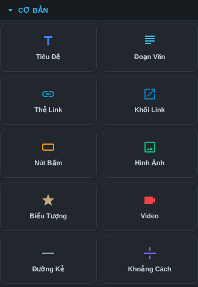
10 khối trong nhóm CƠ BẢN.
Khối
Cách dùng
Tiêu Đề / Đoạn Văn
Kéo vào, nhấp đúp sửa chữ. Tiêu Đề chọn cấp H1–H6 trong Thuộc tính.
Thẻ Link / Khối Link
Liên kết chữ / vùng chứa có liên kết. Nhập đích đến; không lồng nhiều liên kết.
Nút Bấm
Sửa nhãn nút, URL và màu/nền; bấm thử ngoài website.
Hình Ảnh
Chọn nguồn ảnh, Alt và cách cắt; kiểm tra mobile.
Biểu Tượng
Chọn phần tử, xem thuộc tính biểu tượng đang hỗ trợ; đổi màu/cỡ trong Kiểu dáng.
Video
Nhập đường dẫn video ở Thuộc tính; kiểm tra phát ở trang công khai.
Đường Kẻ
Tạo đường phân cách, chỉnh màu/độ dày/chiều rộng.
Khoảng Cách
Tạo khoảng trống có chủ đích; kiểm tra không quá cao trên điện thoại.
UI/UX BUILDER · TRA CỨU 38 KHỐI
Tra cứu khối: Bố cục
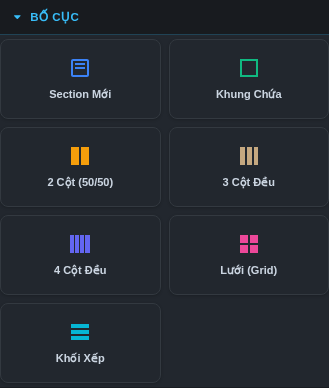
7 khối trong nhóm BỐ CỤC.
Khối
Cách dùng
Section Mới
Một vùng lớn của trang: giới thiệu, dịch vụ, liên hệ. Có thể chứa nhiều khung và nội dung.
Khung Chứa
Gom nội dung và giới hạn chiều rộng. Chọn khung để căn/đặt khoảng đệm chung.
2 Cột (50/50)
Ảnh bên trái, chữ bên phải hoặc hai thẻ ngang. Thả nội dung vào từng cột.
3 Cột Đều
Ba lợi ích hoặc ba nhóm dịch vụ. Kiểm tra cách xuống cột trên điện thoại.
4 Cột Đều
Bốn mục ngắn; tránh nhồi đoạn văn dài.
Lưới (Grid)
Xếp thẻ/ảnh theo hàng và cột. Chọn khung lưới trước khi chỉnh cột/gap.
Khối Xếp
Nhóm nội dung theo hướng xếp; chọn hướng và khoảng cách trong thuộc tính/kiểu dáng.
UI/UX BUILDER · TRA CỨU 38 KHỐI
Tra cứu khối: Thẻ và nội dung
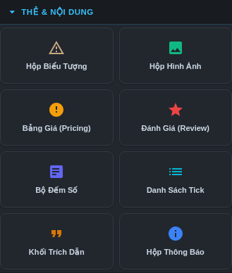
8 khối trong nhóm THẺ & NỘI DUNG.
Khối
Cần thay sau khi kéo vào
Hộp Biểu Tượng
Biểu tượng, tiêu đề và đoạn mô tả. Chọn từng thành phần con để sửa.
Hộp Hình Ảnh
Ảnh, Alt, tiêu đề, mô tả và liên kết nếu có.
Bảng Giá (Pricing)
Tên gói, giá, quyền lợi, nhãn và đích nút. Đây là nội dung hiển thị, không tự đổi giá bán trong hệ thống.
Đánh Giá (Review)
Lời nhận xét, tên và ảnh đại diện được phép sử dụng. Đây là thẻ tĩnh.
Bộ Đếm Số
Số và nhãn thống kê. Không mặc định lấy số liệu thật hay tự chạy hiệu ứng đếm.
Danh Sách Tick
Từng dòng cam kết/lợi ích. Kiểm tra các nội dung mẫu chưa đúng doanh nghiệp.
Khối Trích Dẫn
Câu trích dẫn và tác giả.
Hộp Thông Báo
Tiêu đề và nội dung thông báo; kiểm tra ngày kết thúc ưu đãi.
UI/UX BUILDER · TRA CỨU 38 KHỐI
Tra cứu khối: Tương tác và tiện ích
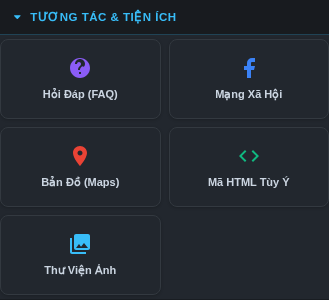
5 khối trong nhóm TƯƠNG TÁC & TIỆN ÍCH.
Khối
Cách dùng và kiểm tra
Hỏi Đáp (FAQ)
Chọn câu hỏi/câu trả lời trong Lớp, nhấp đúp sửa chữ. Dùng nhân bản cho mục tương tự. Ngoài website, bấm từng câu để kiểm tra mở/đóng.
Mạng Xã Hội
Chọn từng biểu tượng liên kết, thay URL bằng trang của doanh nghiệp. Mặc định mẫu có thể chỉ trỏ đến trang chủ mạng xã hội.
Bản Đồ (Maps)
Khối có bản đồ mẫu. Hiện chưa có ô chọn địa chỉ thân thiện riêng cho bản đồ này; nhờ người kỹ thuật đổi địa chỉ nhúng. Không xuất bản nguyên vị trí mẫu.
Mã HTML Tùy Ý
Chèn nội dung mã do người kỹ thuật cung cấp. Không cần dùng để sửa chữ/ảnh. Mã/script có thể bị lọc khi lưu.
Thư Viện Ảnh
Chọn từng ảnh trong lưới, thay ảnh và Alt. Chỉnh số cột/khoảng cách ở khung cha; không mặc định có mở ảnh phóng lớn.
UI/UX BUILDER · HƯỚNG DẪN THỰC HÀNH
Video: chèn và kiểm tra phát
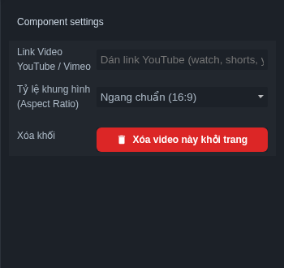
Bảng thuộc tính Video.
Mở nhóm Cơ bản và kéo Video vào vùng nội dung.
Chọn Video, mở Thuộc tính. Dán đường dẫn video YouTube hoặc Vimeo được phép dùng vào trường nguồn video.
Chọn Tỷ lệ khung hình: 16:9 cho ngang, 4:3 truyền thống, 1:1 vuông hoặc 9:16 video dọc. Chỉnh khoảng cách ở Kiểu dáng.
Nếu vùng phát giữ thao tác chuột, chọn khối Video từ cây Lớp để di chuyển/nhân bản/xóa.
Lưu nháp; kiểm tra trên máy tính và điện thoại.
Sau xuất bản, mở trang công khai, bấm phát và thử âm thanh/toàn màn hình khi cần.
Nếu video không phát: mở thử liên kết gốc, kiểm tra video có cho phép nhúng và có bị giới hạn người xem hay không. Không coi ảnh đại diện video là bằng chứng phát thành công.
UI/UX BUILDER · HƯỚNG DẪN THỰC HÀNH
Khối dữ liệu động hoạt động ra sao?
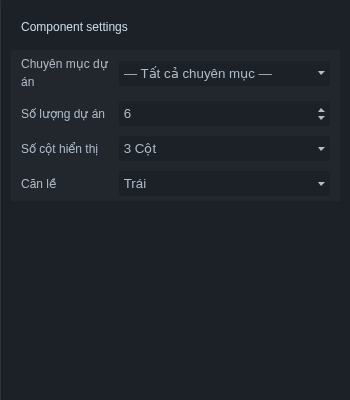
Ví dụ thuộc tính Lưới Dự Án.
Khối tĩnh giống một đoạn nội dung bạn tự gõ. Khối động giống cửa sổ hiển thị dữ liệu từ phần quản lý sản phẩm, bài viết, dự án hoặc đánh giá.
Mở Khối → Dữ liệu động; kéo khối phù hợp vào trang.
Chọn cả khối động bằng Lớp nếu khó bấm trên canvas.
Mở Thuộc tính; chọn danh mục/chuyên mục, số lượng, số cột và căn lề theo trường của khối.
Chờ khối cập nhật. Nếu trống, kiểm tra dữ liệu nguồn và bộ lọc trước.
Muốn sửa tên/ảnh/giá của một mục, mở module quản lý dữ liệu tương ứng.
Lưu nháp; sau xuất bản kiểm tra số mục, ảnh, giá/tiêu đề và liên kết chi tiết.
UI/UX BUILDER · TRA CỨU 38 KHỐI
Tra cứu 8 khối dữ liệu động
Khối
Thiết lập và nguồn nội dung
Lưới Sản Phẩm
Danh mục; số lượng; truy vấn Mới nhất/Nổi bật; số cột; căn lề. Sửa dữ liệu tại quản lý sản phẩm.
Tabs Sản Phẩm
Số lượng sản phẩm; số cột; căn lề. Ngoài website kiểm tra đổi tab và sản phẩm tương ứng.
Danh Mục Sản Phẩm
Số lượng danh mục; số cột; căn lề. Dữ liệu lấy từ danh mục sản phẩm.
Bài Viết Mới
Chuyên mục; số lượng bài; số cột; căn lề. Sửa bài trong quản lý bài viết.
Lưới Dự Án
Chuyên mục dự án; số lượng; số cột; căn lề. Chọn đúng nhóm khách sạn/nhà ở/thương mại/khác đang hiển thị.
Đánh Giá Mới
Số lượng đánh giá; số cột. Khác thẻ Đánh Giá (Review) tĩnh: lấy dữ liệu đánh giá của hệ thống.
Form Liên Hệ
Dùng biểu mẫu của hệ thống. Kiểm tra trường, gửi thử và xác nhận nơi nhận trước khi đưa vào sử dụng.
Khối Dùng Chung (Partial)
Chọn Partial trong Thuộc tính. Nội dung lấy từ khối dùng chung đã chọn, không sửa trực tiếp dữ liệu bên trong tại trang này.
UI/UX BUILDER · HƯỚNG DẪN THỰC HÀNH
Biểu mẫu liên hệ: kiểm tra đủ luồng
Thêm Form Liên Hệ từ nhóm Dữ liệu động vào vùng phù hợp. Nếu trang đã có biểu mẫu, kiểm tra tránh tạo thêm bản trùng.
Quan sát các trường và nút gửi. Chỉnh khung ngoài, khoảng cách và tiêu đề hướng dẫn người gửi nếu cần.
Lưu nháp; dùng môi trường kiểm thử hoặc trang được phép để kiểm tra gửi.
Thử bỏ trống trường bắt buộc: phải thấy nhắc nhập dữ liệu hợp lệ.
Nhập thông tin thử dễ nhận biết, ví dụ tên “Kiểm tra biểu mẫu”, email người phụ trách và nội dung “Tin kiểm thử, không phải yêu cầu khách hàng”.
Bấm gửi một lần và đợi phản hồi.
Kiểm tra mục Yêu cầu liên hệ hoặc kênh nhận được cấu hình; xác nhận đúng nội dung thực sự đến nơi.
Kiểm tra lại thao tác trên điện thoại.
UI/UX BUILDER · HƯỚNG DẪN THỰC HÀNH
Kiểm tra điện thoại và máy tính bảng
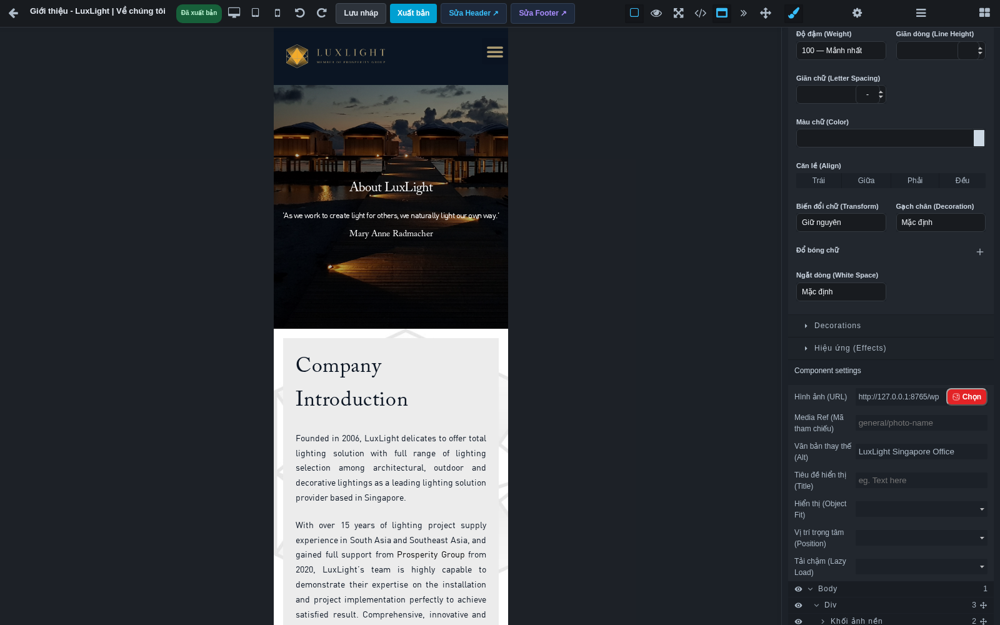
Chế độ Điện thoại: khung 375px. Cuộn hết phần nội dung để kiểm tra.
Hoàn thiện màn hình Máy tính trước, sau đó chọn Máy tính bảng (768px).
Kiểm tra tiêu đề, số cột, khoảng cách và nút.
Chọn Điện thoại (375px), cuộn từ đầu đến cuối.
Nếu cần, chọn phần tử và chỉnh ở thiết bị hiện tại. Quay lại Desktop để kiểm tra tác động.
Sau xuất bản, mở trang bằng điện thoại thật để thử menu, nút và biểu mẫu.
Cần nhìn
Dấu hiệu cần sửa
Chiều ngang
Trang bị kéo ngang, chữ/nút vượt khỏi khung.
Chữ và nút
Chữ quá nhỏ, tiêu đề quá dài, nút khó chạm.
Ảnh và cột
Cắt mất chủ thể, cột quá hẹp, khoảng trống quá lớn.
UI/UX BUILDER · HƯỚNG DẪN THỰC HÀNH
Xem trước và mở rộng vùng làm việc
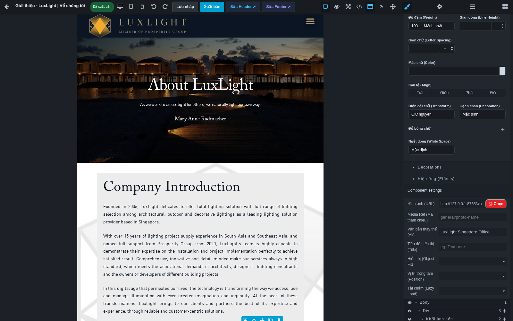
Máy tính bảng 768px. Đây là mô phỏng kích thước trong Builder.
Bấm biểu tượng con mắt để xem bố cục ít công cụ; bấm lại để tiếp tục sửa.
Dùng Toàn màn hình nếu cần vùng quan sát lớn hơn.
Bấm dấu » để thu gọn bảng bên phải; bấm nút mở lại khi cần chọn khối/kiểu dáng.
Dùng nút Hiện viền các khối khi khó nhận ra vùng chứa.
Dùng Hiện Header & Footer thật để đối chiếu nội dung với đầu/chân trang. Nút này chỉ thay ngữ cảnh xem.
UI/UX BUILDER · HƯỚNG DẪN THỰC HÀNH
Header/Footer: phần đầu và chân trang
Header có thể chứa logo, menu và nút dùng ở nhiều trang.
Từ Builder của trang cần kiểm tra, bấm Sửa Header hoặc Sửa Footer.
Đọc tên phần đang mở. Đây là phần dùng chung, không phải thân trang ban đầu.
Sửa chữ, ảnh logo, liên kết hoặc khoảng cách bằng các thao tác đã học.
Lưu nháp phần dùng chung. Kiểm tra Desktop và Mobile.
Khi được duyệt, xuất bản chính Header/Footer đó.
Mở nhiều trang đang dùng phần này; kiểm tra logo, menu, số điện thoại, email và các đích liên kết.
UI/UX BUILDER · HƯỚNG DẪN THỰC HÀNH
Chọn bố cục và tạo khối dùng chung
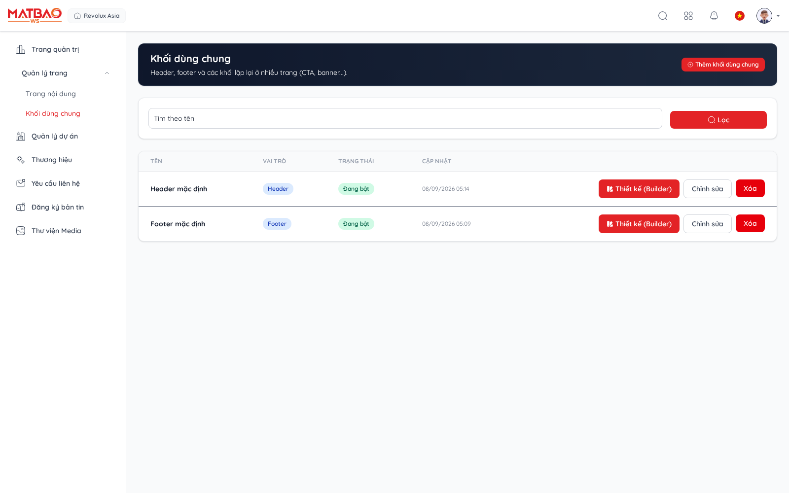
Danh sách quản lý phần dùng chung.
Lựa chọn Header/Footer
Khi dùng
Theo mặc định site
Trang dùng đầu/chân trang mặc định của website.
Chỉ định riêng
Chọn một Header/Footer trong danh sách hiện ra để dùng cho trang này.
Không dùng header/footer
Ẩn phần tương ứng trên trang; phù hợp một số trang đích được thiết kế riêng.
Mở quản lý phần dùng chung từ chức năng đang được cấp quyền. Chọn thêm mới.
Đặt tên rõ phạm vi, ví dụ “Banner tư vấn showroom”. Chọn vai trò Header, Footer hoặc Khối dùng chung khác.
Tạo bản nháp, mở thiết kế, sửa nội dung rồi lưu và xuất bản khi đã duyệt.
Ở trang đích: gán Header/Footer trong Thông tin trang, hoặc kéo Khối Dùng Chung (Partial) vào thân trang và chọn phần cần dùng trong Thuộc tính.
Lưu trang và kiểm tra kết quả ngoài website.
UI/UX BUILDER · HƯỚNG DẪN THỰC HÀNH
Lưu nháp và xuất bản: khác nhau thế nào?
Thao tác
Kết quả mong đợi
Lưu nháp / Ctrl+S
Giữ thiết kế đang sửa theo ngôn ngữ; khách vẫn xem phiên bản đã xuất bản trước đó.
Xuất bản → Xuất bản ngay
Đưa nội dung hiện tại ra website sau khi xác nhận và máy chủ trả thành công.
Trạng thái “Đã xuất bản”
Cho biết trang đã xuất bản; không chứng minh mọi sửa đổi vừa gõ đã được lưu.
Hoàn tác
Lùi thao tác trong phiên hiện tại; không thay thế sao lưu hoặc lịch sử phiên bản.
Sau một nhóm sửa nhỏ, bấm ra ngoài chữ rồi Lưu nháp.
Đợi Đã lưu bản nháp!. Nếu báo lỗi, giữ tab đang mở và xử lý trước khi rời trang.
Mở lại Builder để xác nhận dữ liệu còn đúng.
Kiểm tra nội dung, ảnh, link, ngôn ngữ và ba kích thước thiết bị.
Xuất bản khi nội dung đã được duyệt; sau đó kiểm tra trang công khai.
UI/UX BUILDER · HƯỚNG DẪN THỰC HÀNH
Xuất bản và kiểm tra website
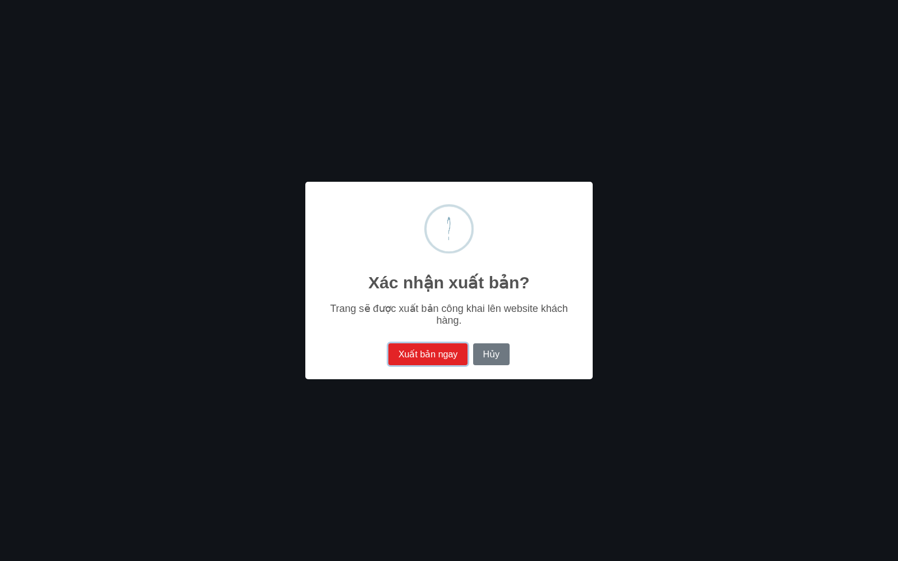
Hộp xác nhận: Hủy để quay lại; Xuất bản ngay để đưa nội dung ra website.
Bấm Xuất bản. Đọc lại xác nhận. Nếu chưa chắc nội dung đúng, chọn Hủy.
Bấm Xuất bản ngay khi muốn công khai. Đợi thông báo Trang đã được xuất bản lên website!.
Mở URL công khai của trang trong tab riêng. Các trang chính hiện có như /gioi-thieu, /thuong-hieu, /du-an, /lien-he.
Tải lại trang; đối chiếu chữ/ảnh vừa sửa và Header/Footer.
Bấm thử menu, nút liên hệ, link chi tiết, FAQ, video và form nếu có.
Kiểm tra trên điện thoại; nhờ một người khác xem lại nội dung quan trọng.
UI/UX BUILDER · HƯỚNG DẪN THỰC HÀNH
Công cụ mã nguồn và kéo tự do
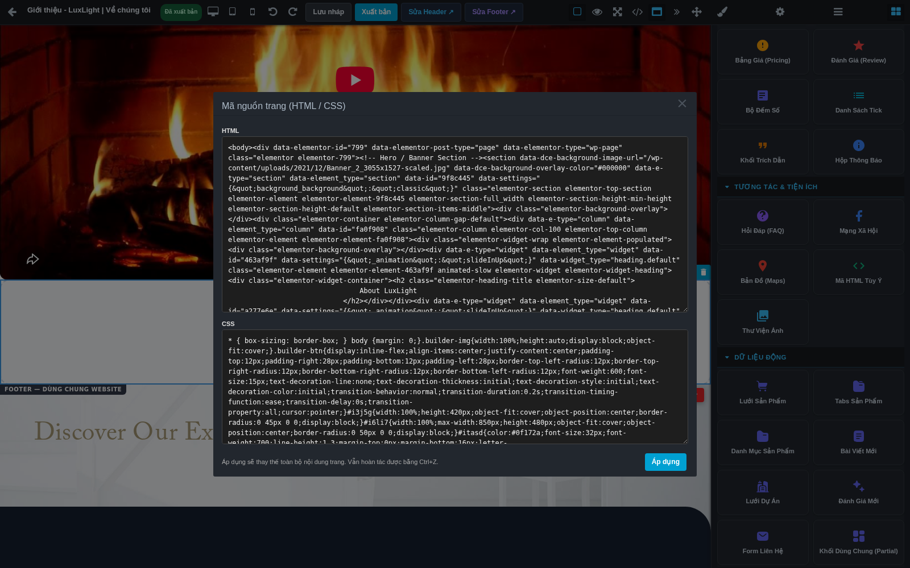
Cửa sổ HTML/CSS là công cụ nâng cao.
Xem & sửa mã nguồn: bấm biểu tượng để mở HTML/CSS. Đóng cửa sổ nếu chỉ xem. Nút Áp dụng thay thế nội dung và kiểu dáng toàn trang đang sửa; sau đó vẫn phải lưu nháp/xuất bản. Chỉ dùng khi có mã được người kỹ thuật kiểm tra và có bản nội dung để khôi phục.
Mã HTML Tùy Ý: là một khối nhúng trong trang, khác cửa sổ thay toàn trang. Nội dung script có thể bị bộ lọc loại bỏ; không tự dán mã theo quảng cáo hoặc hướng dẫn không rõ nguồn.
Kéo thả tự do: bấm biểu tượng mũi tên bốn hướng để bật; chọn phần tử và kéo tới vị trí muốn đặt; bấm lại để tắt. Vị trí tự do có thể chồng chữ/ảnh khi nội dung dài hoặc màn hình nhỏ. Luôn kiểm tra cả ba thiết bị và public.
UI/UX BUILDER · HƯỚNG DẪN THỰC HÀNH
Bài thực hành: trang giới thiệu showroom
Mục tiêu: một trang có tiêu đề, ảnh showroom, phần giới thiệu, ba điểm nổi bật và nút liên hệ. Thực hành trên trang nháp riêng, không dùng trang chủ đang chạy.
Tạo trang “Giới thiệu showroom – Thực hành”, slug riêng chưa được sử dụng. Để trạng thái Bản nháp, lưu rồi mở Builder.
Kéo Section Mới, thêm Tiêu Đề. Nhập “Khám phá showroom của chúng tôi”, chọn H1.
Thêm Đoạn Văn bên dưới: một câu mô tả ngắn về không gian trưng bày.
Thêm 2 Cột (50/50). Cột trái đặt Hình Ảnh; cột phải đặt Tiêu Đề H2, Đoạn Văn và Nút Bấm.
Thay ảnh bằng ảnh được duyệt; điền Alt. Nhập nội dung thật ở cột phải.
Đặt nhãn nút “Liên hệ tư vấn”, URL /lien-he nếu đây là đường dẫn liên hệ đúng của website.
Thêm một vùng mới với H2 “Vì sao ghé thăm showroom?”. Đặt 3 Cột Đều, mỗi cột một Hộp Biểu Tượng.
Thay ba tiêu đề và mô tả bằng các lợi ích đã được duyệt. Xóa mọi cam kết/thương hiệu mẫu không phù hợp.
Chỉnh khoảng đệm, màu và cỡ chữ; lưu nháp.
UI/UX BUILDER · HƯỚNG DẪN THỰC HÀNH
Bài thực hành: tự kiểm tra kết quả
Mở cây Lớp. Xác nhận ảnh và văn bản nằm trong hai cột, ba điểm nổi bật nằm trong vùng riêng.
Đổi sang Tablet 768px. Kiểm tra độ rộng nút và tiêu đề.
Đổi sang Mobile 375px. Cuộn hết trang; sửa chữ tràn, ảnh cắt sai và khoảng trống quá lớn.
Quay lại Desktop. Xác nhận các chỉnh sửa mobile không làm bố cục desktop bất thường.
Lưu nháp và đợi thông báo. Mở lại trang từ danh sách, kiểm tra nội dung vẫn đủ.
Nhờ người duyệt kiểm tra chính tả, ảnh, số điện thoại và thông tin doanh nghiệp.
Chỉ xuất bản trang thực hành nếu đây là trang được phép công khai. Nếu không, giữ nháp.
Với trang đã xuất bản: mở URL, bấm nút liên hệ và kiểm tra điện thoại thật.
Bạn đã tự làm được
Đánh dấu
Tạo trang nháp và mở đúng Builder
□
Thêm khối, sửa chữ, ảnh và link
□
Chọn đúng khung bằng cây Lớp
□
Kiểm tra ba kích thước thiết bị
□
Lưu, mở lại, phân biệt nháp với public
□
UI/UX BUILDER · HƯỚNG DẪN THỰC HÀNH
Xử lý lỗi: chọn, sửa và hiển thị
Hiện tượng
Làm theo thứ tự
Không sửa được chữ
Chọn phần chữ bằng Lớp → nhấp đúp → kiểm tra có phải khối dữ liệu động hoặc Header/Footer chỉ xem không.
Bảng bên phải trống
Chọn một phần tử → mở đúng tab Kiểu dáng/Thuộc tính. Nếu bảng bị thu gọn, mở lại bằng nút » tương ứng.
Đổi một chỗ, chỗ khác cũng đổi
Hoàn tác → kiểm tra đang chọn khung cha hoặc lớp dùng chung → chọn phần tử nhỏ hơn.
Kéo khối sai vị trí
Hoàn tác → bật viền → chọn khung cần chứa bằng Lớp → kéo lại theo vạch chèn.
Mất nội dung sau khi xóa
Ctrl+Z ngay khi còn trong phiên. Nếu đã rời phiên, nhờ người phụ trách kiểm tra bản sao lưu; không mặc định có lịch sử trong Builder.
Ảnh nền không đổi
Kiểm tra ảnh con hay nền khung cha → chọn đúng vùng → sửa nguồn nền trong Kiểu dáng.
Khối động rỗng
Kiểm tra danh mục/chuyên mục, số lượng và dữ liệu nguồn; tài khoản/tính năng có được cấp không.
Điện thoại tràn ngang
Tìm khối rộng cố định, nhiều cột hoặc vị trí tự do → chỉnh trong Mobile → quay lại Desktop kiểm tra.
Bản đồ sai địa chỉ
Không xuất bản vị trí mẫu; chuyển người kỹ thuật thay địa chỉ nhúng vì khối chưa có ô địa chỉ riêng.
UI/UX BUILDER · HƯỚNG DẪN THỰC HÀNH
Xử lý lỗi: lưu, ảnh và trang công khai
Hiện tượng
Làm theo thứ tự
Lưu báo lỗi
Giữ tab đang mở → đọc/chụp thông báo → kiểm tra mạng → mở tab khác kiểm tra đăng nhập → thử lưu lại sau khi xử lý.
Đăng nhập hết hạn
Đăng nhập lại trong tab khác nếu được → quay về tab thiết kế thử lưu. Nếu vẫn lỗi, sao chép nội dung chữ ra tệp trước khi tải lại.
Upload không thành công
Kiểm tra định dạng/dung lượng theo lỗi → quyền Media → thử lại một tệp. 100% không thay thế thông báo thành công.
Chọn ảnh không xác nhận được
Bấm một ảnh trong kết quả hiện tại. Sau tìm kiếm/đổi thư mục phải chọn lại.
Website chưa đổi
Đúng URL/ngôn ngữ? Đã Xuất bản ngay và thành công? Tải lại public; nếu vẫn cũ, gửi URL và ảnh đối chiếu.
Trang không mở được
Kiểm tra slug mới/cũ, trạng thái Bản nháp hay Xuất bản, cấu hình tính năng.
Menu/slider/video không chạy
Thử trên public, ghi thao tác và trình duyệt. Theme nhập có lỗi runtime còn được ghi nhận; chuyển kỹ thuật kiểm tra.
Form gửi nhưng không nhận
Ghi thời gian và nội dung thử, kiểm tra Yêu cầu liên hệ/kênh nhận; không coi thông báo giao diện là bằng chứng email đến.
Mẫu gửi hỗ trợ: Tên trang + URL + ngôn ngữ + thời gian + thiết bị/trình duyệt + thao tác vừa làm + điều mong đợi + điều thực tế xảy ra + ảnh thông báo. Không gửi mật khẩu.
UI/UX BUILDER · HƯỚNG DẪN THỰC HÀNH
Phiếu kiểm tra trước khi bàn giao
Nội dung kiểm tra
Đã kiểm
Đúng tên trang, đường dẫn và ngôn ngữ
□
Chính tả, thông tin doanh nghiệp, giá/cam kết đã được duyệt
□
Đã thay hết chữ, ảnh và link mẫu
□
Tiêu đề rõ thứ tự, không dùng H1 chỉ để phóng chữ
□
Ảnh đúng, Alt phù hợp, không cắt mất chủ thể
□
Link/nút đi đúng địa chỉ; số điện thoại/email đúng
□
Desktop, Tablet, Mobile không tràn ngang
□
Đã lưu nháp, mở lại và nội dung còn nguyên
□
Header/Footer đúng; các trang dùng chung đã được kiểm tra
□
Khối động lấy đúng dữ liệu và link chi tiết
□
Đã được duyệt trước khi xuất bản
□
Đã xuất bản thành công và tải lại public
□
Đã thử chức năng có dùng: menu, FAQ, video, form
□
Đã ghi rõ các chức năng chưa kiểm tra/chưa hoạt động
□
Người biên tập: ____________________ Ngày: ____________ Người kiểm tra: ____________________ Trang / URL: __________________________________________
UI/UX BUILDER · HƯỚNG DẪN THỰC HÀNH
Từ điển nhỏ và phạm vi tài liệu
Từ trên màn hình
Nghĩa dễ hiểu
Builder / Canvas
Trình thiết kế / vùng trang ở giữa màn hình.
Component / Block
Phần tử / khối nội dung có thể thêm vào trang.
Layer / Parent / Child
Lớp / khung cha / thành phần con bên trong.
Style / Trait
Kiểu dáng / thuộc tính riêng của phần tử.
Responsive
Bố cục thích ứng với kích thước màn hình.
Header / Footer / Partial
Đầu trang / chân trang / phần dùng chung.
Draft / Publish
Bản nháp / đưa nội dung ra website.
Slug / URL / Alt
Tên trong đường dẫn / địa chỉ trang / mô tả ảnh.
HTML / CSS
Mã cấu trúc nội dung / mã kiểu dáng; không cần biết để làm các bài cơ bản.
Nguồn đối chiếu: giao diện admin và mã nguồn Builder trong workspace ngày 09/09/2026; hướng dẫn và báo cáo kiểm thử 08/09/2026; quy tắc nghiệp vụ nháp/xuất bản trong kho tri thức dự án.
Giới hạn: ảnh dùng bản sao CMS kiểm thử, Media trống; không gửi mail/upload dịch vụ thật và không xuất bản ví dụ. Trang công khai kiểm thử còn lỗi tương tác từ theme nhập. Bản PDF không thay thế nghiệm thu các chức năng đó.
Giữ bản HTML và thư mục ảnh đi kèm để cập nhật tài liệu khi giao diện thay đổi. PDF có mục lục bấm được và số trang để tra cứu.